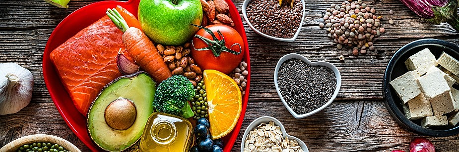

13 PROJETOS
13.1 PROJETO 1 — ANÁLISE E VISUALIZAÇÃO DE DADOS COM GRÁFICOS ESTÁTICOS
13.1.1 SITUAÇÃO PRÁTICA MOTIVADORA

Como situação prática motivadora deste projeto, considere os dados coletados por alunas do curso de pós-graduação em Nutrição da UFF, contendo informações de 2.359 pessoas que responderam a um questionário online no ano de 2022.
A base reúne 30 variáveis relacionadas a características sociodemográficas, condições vivenciadas durante a pandemia de COVID-19, características antropométricas e mudanças nos hábitos alimentares.
Para fins de análise estatística, as variáveis serão organizadas de acordo com o papel desempenhado no estudo, sendo classificadas em variáveis desfecho e variáveis explicativas.
13.1.1.1 VARIÁVEIS DESFECHO
As variáveis desfecho representam principalmente as mudanças ocorridas nos hábitos alimentares e no comportamento relacionado à alimentação durante a pandemia.
13.1.1.1.1 DESFECHO GERAL
| Variável | Descrição | Categorias |
|---|---|---|
| Alteracao_Pandemia | Ocorrência de alteração na alimentação durante a pandemia | Sim; Não |
13.1.1.1.2 DESFECHOS ESPECÍFICOS RELACIONADOS AO CONSUMO ALIMENTAR
| Variável | Descrição | Categorias |
|---|---|---|
| Paes_Torradas_Biscoitos | Mudança no consumo de pães, torradas e biscoitos | Aumentou; Diminuiu; Não alterou; Não tenho o hábito |
| Batata_Macarrao_Arroz | Mudança no consumo de batata, massas e arroz | Aumentou; Diminuiu; Não alterou; Não tenho o hábito |
| Frutas | Mudança no consumo de frutas | Aumentou; Diminuiu; Não alterou; Não tenho o hábito |
| Legumes_Verduras | Mudança no consumo de legumes e verduras | Aumentou; Diminuiu; Não alterou; Não tenho o hábito |
| Feijao_GraoBico_Lentilha | Mudança no consumo de leguminosas | Aumentou; Diminuiu; Não alterou; Não tenho o hábito |
| Ovos_Carnes | Mudança no consumo de ovos e carnes | Aumentou; Diminuiu; Não alterou; Não tenho o hábito |
| Leites_Derivados | Mudança no consumo de leite e derivados | Aumentou; Diminuiu; Não alterou; Não tenho o hábito |
| Doces | Mudança no consumo de doces | Aumentou; Diminuiu; Não alterou; Não tenho o hábito |
| Bebidas_Alcoolicas | Mudança no consumo de bebidas alcoólicas | Aumentou; Diminuiu; Não alterou; Não tenho o hábito |
| Refrigerante | Mudança no consumo de refrigerantes | Aumentou; Diminuiu; Não alterou; Não tenho o hábito |
| Produtos_Industrializados | Mudança no consumo de alimentos industrializados | Aumentou; Diminuiu; Não alterou; Não tenho o hábito |
| Embutidos | Mudança no consumo de embutidos | Aumentou; Diminuiu; Não alterou; Não tenho o hábito |
| Consumo_agua | Mudança no consumo de água | Aumentou; Diminuiu; Não alterou; Não tenho o hábito |
13.1.1.1.3 USO DE SERVIÇOS DE ALIMENTAÇÃO
| Variável | Descrição | Categorias |
|---|---|---|
| Delivery | Mudança no uso de serviços de entrega de alimentos | Aumentou; Diminuiu; Não alterou; Não tenho o hábito |
13.1.1.2 VARIÁVEIS EXPLICATIVAS
As variáveis explicativas correspondem às características dos participantes e às condições que podem estar associadas às mudanças observadas nos hábitos alimentares.
13.1.1.2.1 CARACTERÍSTICAS SOCIODEMOGRÁFICAS
| Variável | Descrição | Categorias / Unidade |
|---|---|---|
| Genero | Sexo dos participantes | Feminino; Masculino |
| Raca_cor | Autodeclaração de cor ou raça | Parda; Branca; Preta; Indígena; Amarela; Outro |
| Regiao | Região de residência no Brasil | Sudeste; Sul; Nordeste; Norte; Centro-Oeste |
| Renda_familiar | Faixa de renda mensal da família | Até R$ 1.254,00; R$ 1.255 – R$ 8.640; Mais de R$ 8.640 |
| Escolaridade | Nível educacional mais alto concluído | Analfabeto; Fund. Completo; Médio Completo; Superior Completo; Pós-graduação |
| Trabalha | Exercício de atividade laboral | Sim; Não |
| Idade | Idade do participante | Anos |
13.1.1.2.2 CONDIÇÕES RELACIONADAS À PANDEMIA
| Variável | Descrição | Categorias |
|---|---|---|
| Isolamento | Realização de isolamento social | Sim; Não |
| Covid | Diagnóstico prévio de COVID-19 | Sim; Não |
| Dificuldade_Financeira | Ocorrência de dificuldades financeiras durante a pandemia | Sim; Não |
13.1.1.2.3 ACOMPANHAMENTO NUTRICIONAL
| Variável | Descrição | Categorias |
|---|---|---|
| Consulta_Nutricionista | Realização prévia de consulta com nutricionista | Sim; Não |
13.1.1.2.4 CARACTERÍSTICAS ANTROPOMÉTRICAS
| Variável | Descrição | Unidade / Observações |
|---|---|---|
| Altura | Altura do participante | Metros (m) |
| Peso | Peso do participante | Quilogramas (kg) |
| IMC | Índice de Massa Corporal, calculado pela razão entre peso e altura ao quadrado | kg/m² |
13.1.1.3 OBJETIVOS DO ESTUDO
A base de dados tem como propósito investigar as mudanças nos hábitos alimentares durante a pandemia de COVID-19 e sua possível associação com características sociodemográficas, econômicas, antropométricas e relacionadas às condições vivenciadas durante o período.
De forma específica, busca:
- Caracterizar o perfil sociodemográfico e antropométrico dos participantes, considerando gênero, raça/cor, região de residência, escolaridade, renda familiar, idade e IMC;
- Descrever as condições vivenciadas durante a pandemia, incluindo isolamento social, dificuldades financeiras e ocorrência de COVID-19;
- Identificar a ocorrência de alterações gerais na alimentação durante a pandemia;
- Examinar mudanças específicas no consumo alimentar, considerando aumento, redução ou manutenção do consumo de diferentes grupos de alimentos e bebidas;
- Investigar associações entre as mudanças nos hábitos alimentares e as características sociodemográficas, econômicas, antropométricas e relacionadas à pandemia;
- Compreender possíveis desigualdades nos impactos da pandemia sobre os hábitos alimentares dos participantes.
A base de dados está armazenada no arquivo DadosNutri.xlsx.
13.1.2 ORGANIZAÇÃO DO PROJETO
Neste projeto, vocês deverão desenvolver uma análise exploratória e visual dos dados disponibilizados na disciplina, construindo uma narrativa capaz de comunicar, de maneira clara e objetiva, os principais resultados encontrados.
O trabalho deverá integrar os conteúdos estudados ao longo da disciplina, especialmente:
- construção de tabelas automáticas;
- elaboração e personalização de gráficos estatísticos estáticos;
- organização e apresentação de resultados;
- produção de apresentações automatizadas com Quarto;
- publicação e compartilhamento dos resultados.
13.1.2.1 APRESENTAÇÃO
A apresentação deverá ser desenvolvida integralmente em Quarto, utilizando um formato de slides compatível com a ferramenta, revealjs.
Tempo máximo de apresentação: 15 minutos.
O limite de tempo deverá ser considerado durante todo o planejamento do trabalho. Não é necessário apresentar todas as variáveis disponíveis na base de dados nem produzir uma grande quantidade de tabelas e gráficos.
A proposta é selecionar informações relevantes e construir uma narrativa coerente, priorizando os resultados que contribuam efetivamente para os objetivos da análise.
13.1.2.1.1 INTRODUÇÃO E CONTEXTUALIZAÇÃO
Inicialmente, apresentem brevemente o contexto da base de dados e o problema que será investigado.
Essa parte deve permitir que uma pessoa que não conhece previamente a base compreenda:
- de onde vieram os dados;
- quem são os indivíduos ou unidades analisadas;
- quando e como os dados foram coletados;
- qual é o contexto do estudo;
- qual será o foco da análise realizada.
A contextualização deve ser breve e direcionada ao restante da apresentação.
13.1.2.1.2 OBJETIVOS DA ANÁLISE
Apresentem de forma clara o objetivo geral da análise e, quando necessário, os objetivos específicos que orientarão a apresentação.
Os objetivos deverão funcionar como um guia para a construção da narrativa.
Evitem simplesmente reproduzir todos os objetivos sugeridos na descrição da base. Será possível selecionar e priorizar determinados aspectos, desde que consiga desenvolver uma análise coerente dentro do tempo disponível.
13.1.2.1.3 DADOS E VARIÁVEIS UTILIZADAS
Apresentem brevemente a base de dados e indiquem quais variáveis foram selecionadas para a análise.
Procurem distinguir, quando pertinente:
- variáveis desfecho;
- variáveis explicativas;
- variáveis qualitativas;
- variáveis quantitativas.
Não é necessário apresentar detalhadamente todas as variáveis existentes na base. Destaquem principalmente aquelas que serão importantes para compreender os resultados apresentados posteriormente.
Tabelas compactas, esquemas ou outros recursos visuais podem ser utilizados para facilitar essa apresentação.
13.1.2.1.4 PACOTES UTILIZADOS
Apresentem os principais pacotes do R utilizados no desenvolvimento do projeto e indiquem, resumidamente, a finalidade de cada um.
Por exemplo:
| Pacote | Principal utilização no projeto |
|---|---|
tidyverse |
Manipulação, organização e visualização dos dados |
ggplot2 |
Construção dos gráficos estatísticos |
gtsummary |
Produção de tabelas automáticas |
A tabela acima é apenas um exemplo. Apresentem os pacotes efetivamente utilizados.
13.1.2.1.5 RESULTADOS
Esta deverá ser a parte principal da apresentação.
Os resultados deverão ser organizados de maneira lógica e conectados aos objetivos definidos anteriormente.
Utilizem adequadamente os recursos estudados na disciplina, incluindo:
- tabelas automáticas;
- gráficos estatísticos estáticos;
- medidas descritivas, quando pertinentes;
- comparações entre grupos;
- cruzamentos entre variáveis;
- outros recursos de análise exploratória que contribuam para a investigação.
13.1.2.1.6 SOBRE OS GRÁFICOS
Neste projeto, deverão ser utilizados gráficos estáticos.
Procurem aplicar os princípios de visualização discutidos durante a disciplina, considerando aspectos como:
- escolha adequada do tipo de gráfico;
- títulos e textos informativos;
- escalas adequadas;
- cores utilizadas com propósito;
- organização das categorias;
- legendas;
- rótulos;
- destaque das informações mais relevantes;
- legibilidade durante uma apresentação em slides.
Evitem elementos meramente decorativos ou gráficos que dificultem a interpretação dos resultados.
13.1.2.1.7 PRINCIPAIS ACHADOS
Ao final da apresentação, sintetizem os principais resultados encontrados.
Em vez de simplesmente repetir números apresentados anteriormente, procurem responder:
O que aprendemos com esses dados?
Destaquem os padrões, diferenças ou associações que considerarem mais relevantes para os objetivos estabelecidos.
Quando pertinente, também poderão ser mencionadas limitações importantes dos dados ou da análise realizada.
13.1.2.1.8 ORGANIZAÇÃO E COMUNICAÇÃO
A qualidade do projeto não será avaliada apenas pela quantidade de técnicas utilizadas.
Será considerada especialmente a capacidade do grupo de:
- selecionar informações relevantes;
- construir uma narrativa coerente;
- utilizar adequadamente tabelas e gráficos;
- interpretar corretamente os resultados;
- comunicar os achados de maneira clara;
- produzir uma apresentação visualmente organizada;
- respeitar o limite de 15 minutos.
A apresentação deverá ser planejada para o público, e não apenas como uma demonstração dos códigos desenvolvidos.
Não é necessário exibir códigos extensos durante a apresentação. O código deverá estar incorporado ao documento Quarto e ser utilizado para garantir a reprodutibilidade da análise.
13.1.2.1.9 PUBLICAÇÃO
Após a conclusão do trabalho, a apresentação deverá ser publicada na internet.
Você poderá utilizar uma das seguintes alternativas:
- GitHub Pages;
- Posit Connect Cloud.
A versão publicada deverá estar acessível por meio de um link e reproduzir adequadamente a apresentação desenvolvida em Quarto.
Envie para o meu e-mail: guilhermev@id.uff.br o link da sua apresentação até minutos antes da mesma.
Em breve será disponibilizado o horário de apresentação de cada estudante.
13.2 PROJETO 2 — DASHBOARD INTERATIVO
Neste projeto, os alunos deverão desenvolver um dashboard interativo utilizando o Quarto e o R, aplicando os recursos apresentados em sala de aula.
O objetivo é construir uma ferramenta que permita a visualização, exploração e interpretação de dados, combinando diferentes representações gráficas com recursos de interatividade.
A escolha da base de dados será livre, podendo envolver qualquer área de interesse, como saúde, educação, economia, meio ambiente, esportes, entre outras.
13.2.1 ETAPA I — ESCOLHA E APRESENTAÇÃO DOS DADOS
Os alunos deverão selecionar uma base de dados que permita a construção de diferentes visualizações e análises exploratórias.
O dashboard deverá apresentar brevemente:
- o tema e os objetivos da análise;
- a origem e a descrição da base de dados;
- as principais variáveis utilizadas.
A base de dados deverá ser adequada à proposta do dashboard, permitindo a construção de visualizações informativas e relevantes.
13.2.2 ETAPA II — CONSTRUÇÃO DO DASHBOARD
O dashboard deverá ser desenvolvido utilizando o Quarto, com os seguintes requisitos obrigatórios:
- Apresentar no mínimo duas abas, organizando os conteúdos de maneira lógica e intuitiva.
- Utilizar linhas, colunas e painéis (cards) para organizar as informações.
- Apresentar diferentes tipos de gráficos, adequados às características das variáveis e aos objetivos da análise.
- Utilizar títulos, legendas e identificações que facilitem a interpretação dos resultados.
- Apresentar uma organização visual clara, com atenção à distribuição dos elementos e à facilidade de navegação.
Os alunos poderão utilizar outros recursos apresentados em sala de aula, como value boxes, subabas (.tabset), temas e personalizações visuais.
13.2.3 ETAPA III — INTERATIVIDADE DOS GRÁFICOS
Todos os gráficos apresentados no dashboard deverão ser interativos.
Para isso, os alunos deverão utilizar uma ou mais das seguintes bibliotecas do R:
ggiraphplotlyleafletecharts4r
Os recursos de interatividade poderão incluir:
- exibição de informações ao posicionar o cursor sobre elementos gráficos (hover/tooltip);
- ampliação e deslocamento de gráficos e mapas (zoom/pan);
- seleção ou destaque de observações e categorias;
- exploração de informações por meio de cliques;
- outros recursos interativos disponibilizados pelas bibliotecas utilizadas.
Não será permitido apresentar gráficos exclusivamente estáticos. A escolha das bibliotecas e dos recursos de interatividade deverá considerar as características de cada visualização.
13.2.4 ETAPA IV — INTEGRAÇÃO COM O SHINY
Além da interatividade dos gráficos, será obrigatória a utilização do Shiny para permitir que o usuário explore dinamicamente os dados.
O dashboard deverá apresentar controles interativos, utilizando funções como:
selectInput(): seleção de categorias ou grupos;sliderInput(): seleção de intervalos ou valores numéricos;numericInput(): definição de valores numéricos;checkboxGroupInput(): seleção de múltiplas categorias;- outras funções de entrada de dados do
Shiny.
Os controles deverão estar conectados aos resultados apresentados, permitindo que alterações realizadas pelo usuário modifiquem dinamicamente os gráficos, tabelas ou indicadores do dashboard.
É obrigatório que pelo menos dois elementos visuais sejam atualizados de maneira reativa a partir das escolhas do usuário.
A simples inclusão de controles do Shiny não caracteriza interatividade reativa. Esses controles deverão produzir alterações efetivas nos resultados apresentados.
13.2.5 ETAPA V — PUBLICAÇÃO E COMPARTILHAMENTO
Após a conclusão, o dashboard deverá ser publicado no Posit Connect Cloud, permitindo seu acesso por meio de um navegador.
Os alunos deverão verificar se:
- todas as abas e os painéis estão funcionando corretamente;
- os gráficos apresentam os recursos de interatividade implementados;
- os controles do Shiny atualizam corretamente os resultados;
- o dashboard pode ser acessado e utilizado por outras pessoas por meio do link publicado.
13.2.6 ENTREGA DO PROJETO
Os alunos deverão entregar o Link de acesso ao dashboard, publicado no Posit Connect Cloud.
13.2.7 CRITÉRIOS DE AVALIAÇÃO
O projeto será avaliado considerando:
- Organização e apresentação visual: estrutura das abas, disposição dos painéis e facilidade de navegação.
- Qualidade das visualizações: escolha adequada dos gráficos, clareza das informações e coerência com os objetivos da análise.
- Interatividade gráfica: utilização apropriada dos recursos oferecidos pelas bibliotecas interativas.
- Integração com o Shiny: funcionamento dos controles e atualização reativa dos resultados.
- Interpretação e comunicação dos dados: capacidade do dashboard de transmitir informações relevantes e facilitar a exploração dos resultados.
- Funcionamento e publicação: disponibilidade e funcionamento correto do dashboard no Posit Connect Cloud.
O foco do projeto não será a complexidade da base de dados ou a quantidade de gráficos apresentados, mas a qualidade da visualização, a implementação dos recursos interativos e a capacidade do dashboard de facilitar a exploração e compreensão dos dados.